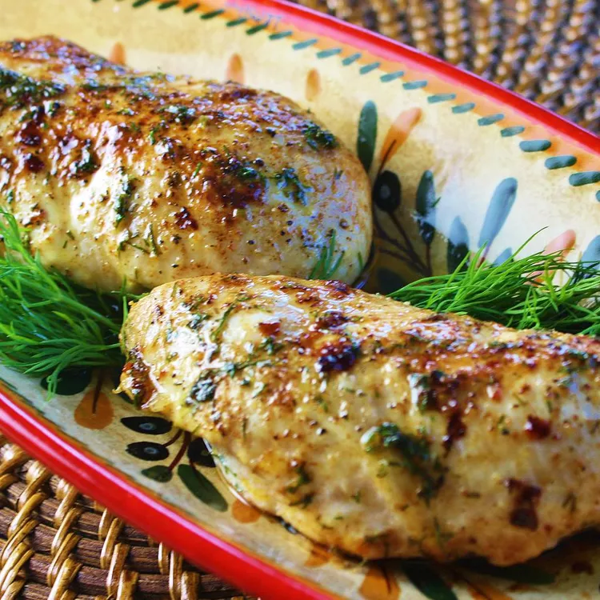

Three-Ingredient Baked Chicken Breasts

Description
Recipe by Jennifer Jones
An easy chicken breast recipe made with few ingredients. I use this as a basic baked chicken recipe when another recipe calls for cooked chicken. It works great for everything and is super customizable. Sometimes I use garlic salt or other seasonings, depending on what I'm using it for.
Ingredients
- ¼ cup butter, melted
- 1 teaspoon salt
- 4 skinless, boneless chicken breast halves
Directions
- Preheat the oven to 350 degrees F (175 degrees C). Lightly butter a baking dish.
- Stir together melted butter and salt in a bowl.
- Arrange chicken in the prepared baking dish. Brush butter mixture onto chicken until thoroughly coated, pouring any extra over chicken.
- Bake in the preheated oven until no longer pink in the center and juices run clear, 30 to 45 minutes. An instant-read thermometer inserted into the center should read at least 165 degrees F (74 degrees C).